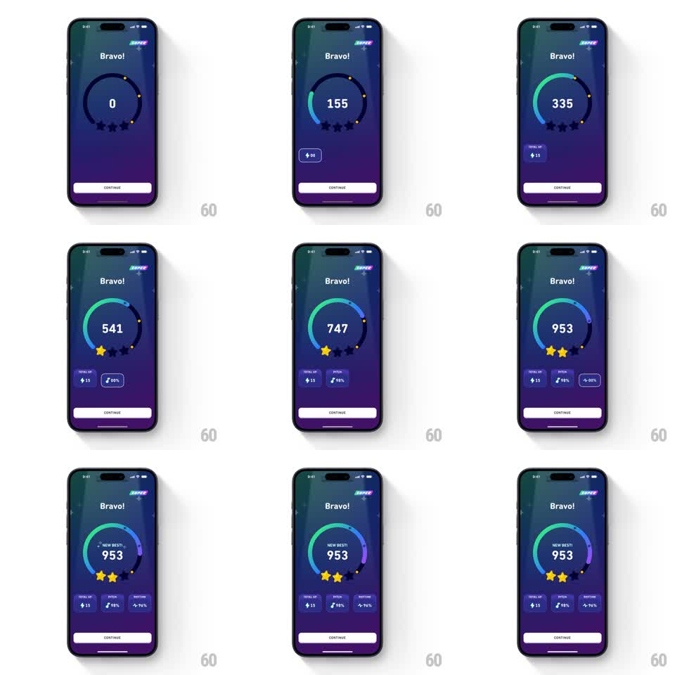

Media
Frame-by-frame

Rebuild this animation 1:1: Duolingo's Super lesson-complete score screen - a counter ticks up as a gradient ring fills around it, stars pop in one by one beneath, stat cards stagger in, and a "NEW BEST!" badge lands on the final number.

Rebuild this animation 1:1: Duolingo's Super lesson-complete score screen - a counter ticks up as a gradient ring fills around it, stars pop in one by one beneath, stat cards stagger in, and a "NEW BEST!" badge lands on the final number. ## Integration Integration: stack-agnostic spec - springs given as stiffness/damping, timed motions as duration + curve; map every value to your framework and animation library of choice. ## Scene Dark purple-blue gradient celebration screen: "Bravo!" title, Super badge top-right, large central ring with the score number inside, three star outlines beneath, a row of small stat cards (Total XP, Pitch %, Rhythm %), white CONTINUE button pinned bottom. ## Motion spec Pattern: multi-stage score count-up celebration. - Ring: gradient arc (green -> blue -> purple) sweeps from top, filling proportionally to the count (~1.5s, ease-out). - Counter: number ticks 0 -> final (953) over the same window, decelerating (ease-out), each digit roll visible. - Stars: pop in left to right as thresholds pass - scale 0 -> 1.3 -> 1 (spring ~400/15, ~300ms each, ~400ms apart), filling gold. - Stat cards: slide up + fade in with 100ms stagger once the count lands. - "NEW BEST!" label scales in above the number (spring ~380/18) after the final star. ## Calibration - Star pops are the rhythm of the sequence - tie them to score thresholds, not fixed timers. - Ring gradient hue rotates subtly as it fills (green start to violet end). ## Reduced motion Final score, full ring, and stars appear together with a 200ms fade. ## Don't miss - CONTINUE is visible but inert-looking until the sequence completes. - The count never overshoots its final value.